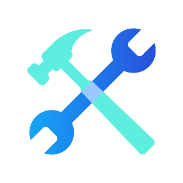
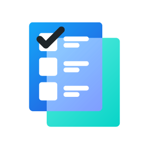

Secure by design
Sign in through your identity provider with OAuth instead of passing around API keys or embedding credentials in local files.
Connect Clozd to the AI tools your team already uses so you can explore win/loss themes, surface decision drivers, and bring real customer evidence into strategy, selling, and messaging work.
Secure • Scalable • Grounded in your actual customer insights
Instead of asking AI to guess, you can bring customer interview data and competitive context into the answer.
Your team can use natural language to work with real customer intelligence inside the flow of everyday work.
Sign in through your identity provider with OAuth instead of passing around API keys or embedding credentials in local files.

Use Clozd intelligence in the AI tools your team already opens every day, from analysis to planning to message development.
Bring actual win/loss themes, decision drivers, quotes, and trend signals into your prompts so the output is more useful and credible.
Use Clozd from Claude, Cursor, Windsurf, and other MCP-capable clients. ChatGPT is not currently supported with Clozd’s updated OAuth flow.
Clozd MCP gives you a direct path from AI to win/loss intelligence. That means you can explore customer themes, competitor patterns, decision drivers, and interview evidence without leaving your workflow or translating everything into dashboard language first.
Instead of manually assembling reports, you can ask direct questions like which competitors are gaining traction, what reasons show up most often in enterprise losses, or where pricing appears as a negative driver in recent interviews.
With Clozd connected, your AI answers can reflect real customer language and actual interview trends, making them more useful for go-to-market teams, product teams, and executives.
Use the MCP for competitive prep, messaging updates, trend reviews, executive summaries, interview evidence pulls, and recurring sales intelligence digests.
Click through the flow to see how an MCP-capable client connects to your system, authenticates securely, and turns live customer data into grounded answers inside the AI experience your team already uses.
Select a step to see what the user does, what Clozd is handling behind the scenes, and what becomes available next.
Start in Claude Desktop, Cursor, Windsurf, Gemini CLI, or another MCP-capable client and choose to add Clozd as a server.
The MCP server exposes tools, prompts, and resources in a format modern AI clients can use directly inside the conversation.
OAuth handles the authorization step without asking users to paste credentials into local config files or pass around API keys.
Clozd gives the agent access to conversations, implementation feedback, surveys, signals, and integrations so output is anchored in real evidence.
Organize the prompt library by team so people can quickly find examples that feel relevant to their job, not just to the underlying technology.
Use these to prepare for deals, spot recurring objections, and pull customer evidence into the moments that matter most.
Summarize the top reasons we lost to our top competitor set in the last 90 days and pull two representative customer quotes I can use in prep.
Which objections come up most often during evaluation, and which ones correlate most strongly with losses? Include examples and suggested talk tracks.
Pull buyer quotes about demo quality and summarize what the best demos had in common versus the ones that failed to build confidence.
List deals marked no decision and summarize the common reasons buyers stalled, delayed, or walked away.
Which deals cite sales responsiveness or follow-through as a positive driver, and what specifically did reps do that built confidence?
Which deals cite sales responsiveness or follow-through as a negative driver, and what specifically went wrong in the process?
Find evidence of price ceiling moments with finance or procurement involvement and summarize the thresholds buyers mention.
Which sales activities like demos, pricing calls, or technical deep dives are mentioned most positively by buyers, and why?
Use these to sharpen positioning, understand buyer perception, and find language worth turning into stronger messaging.
What messaging gaps are appearing most often in recent interviews, and which competitor narratives seem to benefit from them?
How does pricing show up in losses? Break it into too expensive, packaging friction, budget freeze, and unclear ROI with counts and buyer quotes.
Summarize buyer comments about our positioning and brand perception, then show which personas most often act as decision makers versus influencers.
Summarize buyer feedback on packaging and add-on structure and explain how it affects evaluation momentum and outcomes.
Break down win and loss reasons by industry and list the top three differentiators that resonate in each segment.
Summarize why buyers choose all-in-one alternatives versus best-of-breed approaches and identify which narrative appears to win most often.
Extract the most persuasive customer outcomes buyers cited, such as time saved, risk reduced, or revenue impact, and group them into messaging themes.
What customer themes have increased in frequency this quarter, and which ones should shape the next messaging update or campaign narrative?
Use these to spot risk earlier, understand what customers are actually experiencing, and bring stronger evidence into renewals, adoption, and account planning.
Summarize the top themes that show up in at-risk renewals and highlight the earliest warning signs customer teams should pay attention to.
What implementation or onboarding issues are mentioned most often by customers, and which ones appear to have the biggest downstream impact on satisfaction or retention?
Find examples where customer expectations at the point of sale did not match the post-sale experience, and group the gaps into clear themes.
Which product, process, or team-related blockers most often slow adoption after kickoff, and how do customers describe the impact in their own words?
Identify accounts where customers express unmet needs, adjacent use cases, or positive momentum that could point to expansion opportunities.
Pull customer quotes that show measurable value, successful outcomes, or meaningful wins so I can use them in renewal prep or executive reviews.
Break down the top reasons customers churn, separate preventable versus non-preventable themes, and call out the patterns that appear most often.
Summarize what this customer segment cares about most, where they are seeing value, where friction remains, and which quotes would strengthen a QBR narrative.
Use these to surface product gaps, validate roadmap priorities, and understand how buyers describe the experience today.
Find the most frequent product capability gaps mentioned in losses and group them into themes with representative examples.
Show where buyers describe us as easy to use or complex and summarize which workflows or features drove that perception.
Which integrations are most commonly requested, which missing integrations are tied to closed-lost outcomes, and what do buyers say about the API experience?
Summarize what buyers say about the user experience and whether it tends to help outcomes, slow adoption, or increase confusion.
Pull quotes where buyers mention reporting, exports, or access to their own data and summarize the sentiment behind each theme.
Which features are most often praised by buyers, and which features are most often criticized? Group them by theme and frequency.
What are the top product reasons we win deals, and what specific customer language best explains the value behind those wins?
What are the top product reasons we lose deals, and which themes look most urgent for roadmap or enablement attention?
Use these to spot higher-level patterns, compare shifts over time, and focus leadership attention on the themes with the biggest impact.
Compare win drivers versus loss drivers for the last 6 months and call out the biggest gaps we should address first.
Summarize changes in loss themes from the last 3 months versus the prior 3 months and highlight any new themes that were not common before.
Show the largest deals we won and lost in the last year, summarize the decisive factors in each outcome, and flag patterns leadership should act on.
Break down win rate by segment and highlight which segment shows the strongest drivers, the weakest drivers, and the clearest path to improvement.
Show the top ten most-cited decision drivers overall, with frequency, direction, and a representative quote for each.
Across renewals and expansions, what are the top drivers of retention, churn, and upgrades? Separate value realized, new use case, and packaging themes.
Are there specific company tiers or regions where we lose more often? Break down outcomes and summarize the main drivers behind them.
What is the average sales cycle length for wins versus losses, and which drivers appear to correlate most strongly with longer cycles?
Whether you are getting set up for the first time or looking for new ways to use Clozd in daily work, these resources can help you connect faster, ask better questions, and see stronger results.
Placeholder for a polished overview video showing how the MCP connects, what the user sees, and what kinds of answers it can return.

Placeholder for a client-by-client walkthrough covering Claude Desktop, Cursor, Windsurf, and other supported MCP-capable tools.
Placeholder for short demos that show real workflows for sales, product, marketing, and executive users inside the prompt library.
Placeholder for a rollout-oriented video covering access, OAuth expectations, supported clients, and how to introduce the MCP internally.